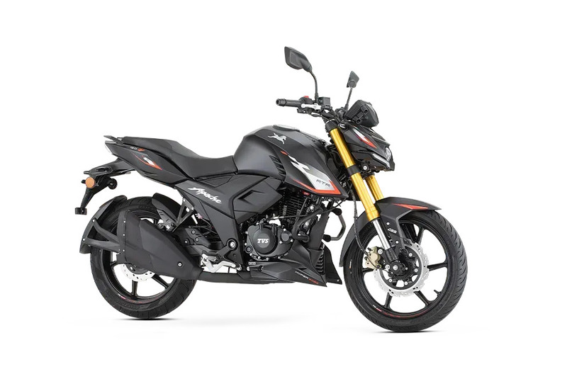
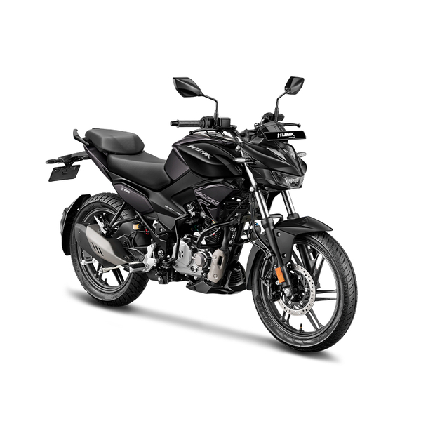
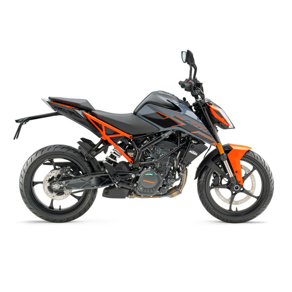
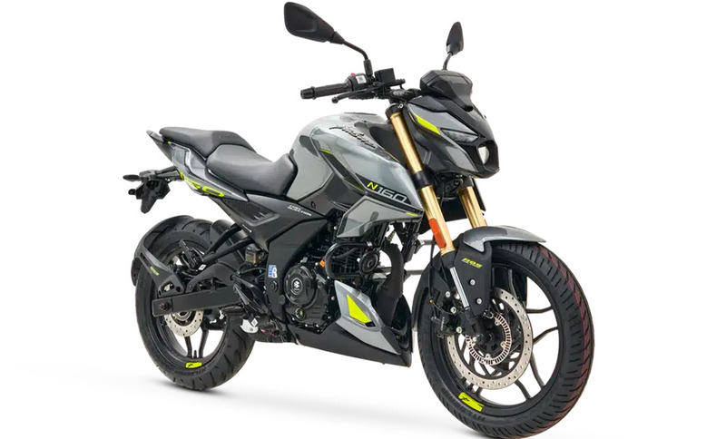
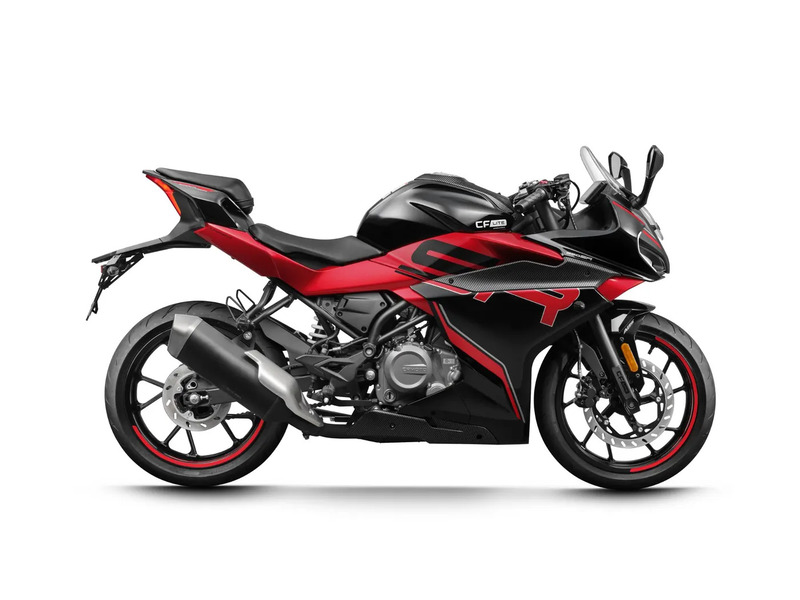
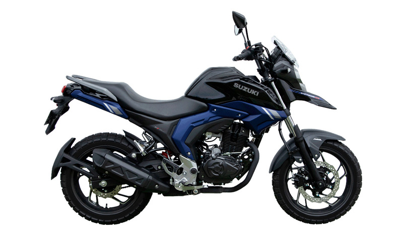

Bajaj Pulsar NS 200
Motor de 199.5 cc, frenos ABS de doble canal y estética deportiva agresiva.
ComprarExplora nuestra flota completa de 10 modelos disponibles en inventario, diseñados para cada estilo de conducción.
Motor de 199.5 cc, frenos ABS de doble canal y estética deportiva agresiva.
Comprar
Motor de 184 cc, suspensión delantera invertida y diseño naked de alto impacto.
Comprar
Motor DTS-i de 160.3 cc, chasis perimetral y agilidad urbana superior.
Comprar
Motor de 155 cc con tecnología SEP, diseño aerodinámico y gran eficiencia.
Comprar.jpg)
Motor de 124.79 cc de 3 válvulas, modos de manejo (Eco/Power) y diseño urbano deportivo.
Comprar
Motor de 155 cc con tecnología VVA, embrague antirrebote y ADN de pista.
Comprar
Motor RT-Fi con tecnología de competición, modos de manejo y conectividad SmartXonnect.
Comprar
Motor XSens de alta eficiencia, tablero digital avanzado y diseño streetfighter robusto.
Comprar
Motor de alto rendimiento, chasis multitubular de competición y espíritu "Ready to Race".
Comprar
Motor monocilíndrico de inyección, frenos ABS de doble canal y diseño futurista.
Comprar
Estética pura de superdeportiva, iluminación LED completa y motor bicilíndrico de gran pegada.
Comprar
Motor de 162 cc, suspensiones de largo recorrido y diseño todoterreno resistente.
Comprar